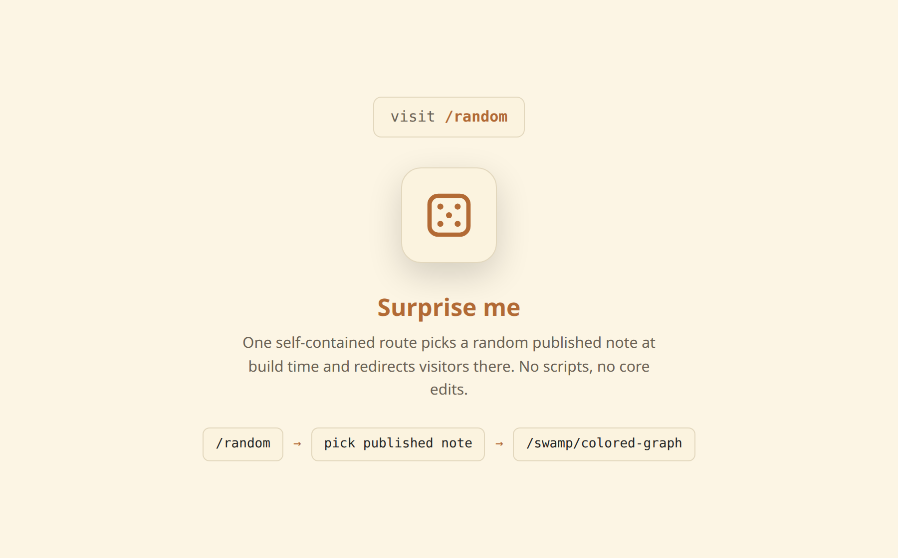

dg-random-note
A “surprise me” route for your garden.


Adds a /random route to your Digital Garden. Visiting /random/ redirects the visitor to a randomly chosen published note. The whole feature is one file — no build scripts, no dependencies, no plugin-core edits.
/random. This is what that button points at.
How it works
The Eleventy template does two things. At build time, a Nunjucks loop over collections.note inlines a JS array of every published note URL into the page. At runtime, a two-line script picks one at random and calls location.replace() — so /random/ stays out of the back-button history and “back” returns you where you came from instead of re-rolling.
build → inline published note URLs into <script>
runtime → pick one at random → location.replace(url)
empty pool → redirect to FALLBACK_URL (default "/")How to use it
Copy the skill folder into your agent's skills directory, then in your Digital Garden repo ask:
git clone https://github.com/palol/skills-zoo.git
cp -r skills-zoo/skills/dg-random-note ~/.claude/skills/(or ~/.agents/skills/)
Use the dg-random-note skill to add a
/randomroute to my digital garden that redirects to a random published note. Install the one page file, then build and walk me through verification.
What it touches
- One new page:
src/site/~random.njk→ permalink/random/. A new file the plugin never ships, so upstreamgit pullnever touches it. - Pool: only notes with
dg-publish: true, and (by default) not flaggeddg-hide— so utility/index pages stay out of the shuffle. - No build scripts, no SCSS, no autoloaded components. The redirect page reuses your site's
pageheader.njkand theme classes, so light/dark just work.
src/site/~random.njk instead of components/user/. Still upstream-safe: it's a brand-new file you own. One config knob: FALLBACK_URL.
What's in the box
- SKILL.md — install workflow, prerequisites, invariants, risk
- assets/~random.njk — the single self-contained route (build-time list + runtime redirect)
- references/architecture.md — build-time loop + runtime pick, and why a root page is upstream-safe
- references/verify.md — post-build QA (route, pool, back-button, fallback)
Prerequisites
- An Obsidian Digital Garden (oleeskild plugin + Eleventy) repo with a working
collections.notecollection and the standardcomponents/pageheader.njkinclude. - Notes use the
dg-publishfrontmatter flag (the DG default). The random pool = published notes.
Scope is Digital Garden only — collections.note and the dg-publish flag are DG-specific.